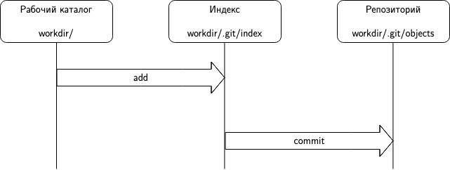
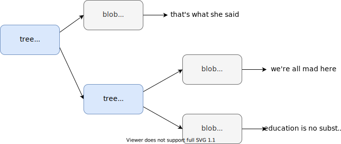
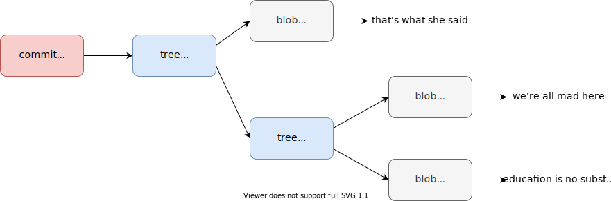
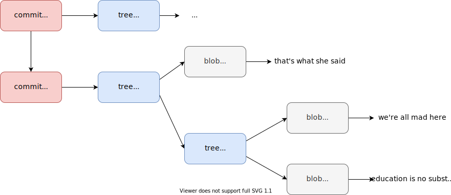
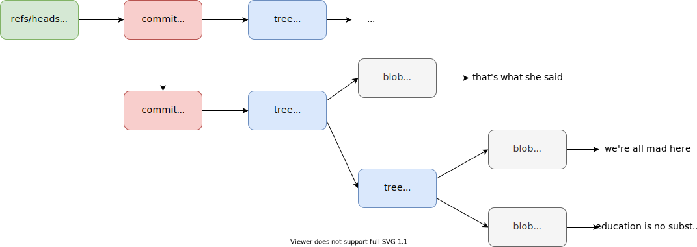
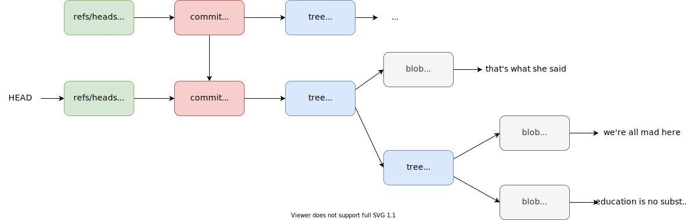

PyVCS. Распределенная система контроля версий
Возможно вы знаете, что Линус Торвальдс написал Git с нуля, а также как сильно он его любит (если вам интересна последовательность событий, которая привела к появлению Git, то можно начать с этого сообщения Линуса в почтовой рассылке ядра Linux):
Actually I’m proud of git. I want to say this. The fact that I had to write git was accidental, but Linux, the design came from a great mind, and that great mind was not mine. I mean you have to give credit for the design of Linux to Kernighan and Ritchie and Thompson. I mean there’s a reason I like Unix and I wanted to redo it. I do want to say that git is a design that is mine and unique, and I’m proud of the fact that I can damn well also do good design from scratch.
Но многие начинающие программисты, и не только, ненавидят Git. Им кажется, что Git это какая-то сложная, запутанная система, при использовании которой постоянно возникают какие-то ошибки, да и вообще «Зачем этот Git нужен?». Обычно эта ненависть вызвана простым непониманиме работы Git'а.
Чтобы устранить это непонимание мы напишем свою систему контроля версий PyVCS, реализующую небольшое подмножество команд Git'а.
Содание репозитория
Вы уже знаете, что выполнение команды git init приводит к созданию нового репозитория в указанном каталоге (текущем по умолчанию). Все данные репозитория обычно расположены в каталоге .git (имя которого можно изменить через переменную окружения GIT_DIR). Давайте попробуем воссоздать минимально необходимую структуру репозитория:
$ mkdir .git
$ mkdir -p .git/refs/heads
$ mkdir -p .git/refs/tags
$ mkdir -p .git/objects
$ echo "ref: refs/heads/master\n" > .git/HEAD
(master) $ echo "[core]\n\trepositoryformatversion = 0\n\tfilemode = true\n\tbare = false\n\tlogallrefupdates = false\n" >> .git/config
(master) $ echo "Unnamed pyvcs repository" >> .git/description
В последующих заданиях будет объяснено назначение каждого созданного каталога и файла, хотя уже должно быть очевидно, что .git/config хранит настройки конткретного репозитория, а .git/description описание. Подробно со структурой каталога .git можно ознакомиться здесь.
Вашей задачей является автоматизировать этот процесс и реализовать команду pyvcs init, которая создает новый пустой репозиторий в указанном каталоге (по умолчанию в текущем). В первую очередь запустите тесты, чтобы понять над какими функциями в этом задании вам предстоит работать:
$ python -m unittest discover
======================================================================
FAIL: test_cant_create_repo_if_workdir_is_a_file (tests.test_repo.RepoCreateTestCase)
----------------------------------------------------------------------
...
После завершения работы над соответствующими функциями выполните следующую команду для установки пакета в вашем виртуальном окружении:
$ pip install -e .
Пример использования:
$ mkdir workdir && cd $_
$ pyvcs init
Initialized empty pyvcs repository in /путь/к/workdir/.git
$ tree .git
.git
├── HEAD
├── config
├── description
├── objects/
└── refs/
├── heads
└── tags
$ GIT_DIR=.pyvcs pyvcs init new_workdir
$ tree new_workdir/.pyvcs
.pyvcs
├── HEAD
├── config
├── description
├── objects/
└── refs/
├── heads
└── tags
Хранение файлов
Разберемся с тем как Git хранит ваши данные. Git является контентно-адресуемым хранилищем данных, другими словами, Git представляет собой хранилище по типу ключ-значение. Ключом выступает хеш посчитанный от данных, а значением сами данные. Итак, когда вы добавляете новый файл в репозиторий, то от содержимого файла считается хеш-сумма по алгоритму SHA-1, два первых символа которой становятся именем директории в каталоге objects, а остальные символы именем файла, чье содержимое записывается в сжатом виде с помощью библиотеки zlib и называется блобом (blob, binary large object). Рассмотрим простой пример:
$ echo -n "that's what she said" > quote.txt
$ git hash-object quote.txt
7e774cf533c51803125d4659f3488bd9dffc41a6
$ tree .git
# No changes
$ git hash-object -w quote.txt
7e774cf533c51803125d4659f3488bd9dffc41a6
$ tree .git
.git
├── objects
│ └── 7e
│ └── 774cf533c51803125d4659f3488bd9dffc41a6
...
$ xxd .git/objects/7e/774cf533c51803125d4659f3488bd9dffc41a6
00000000: 7801 4bca c94f 5230 3260 28c9 482c 512f x.K..OR02`(.H,Q/
00000010: 5628 0752 0ac5 19a9 0ac5 8999 2900 833a V(.R........)..:
00000020: 0962 .b
Еще раз отметим, что Git является контентно-адресуемым хранилищем, таким образом, если у нас будет два файла с одинаковым содержимым, то у них будет одинаковый идентификатор (ключ), а соответственно их содержимое будет представлено одним и тем же блобом:
$ cp quote.txt quote_copy.txt
$ git hash-object -w quote_copy.txt
7e774cf533c51803125d4659f3488bd9dffc41a6
$ tree .git
# No changes
Давайте самостоятельно попробуем посчитать хеш-сумму и сжать содержимое цитаты из примера:
>>> import hashlib
>>> import zlib
>>> content = "that's what she said"
>>> header = f"blob {len(content)}\0"
>>> store = header + content
>>> hashlib.sha1(store.encode()).hexdigest()
'7e774cf533c51803125d4659f3488bd9dffc41a6'
>>> zlib.compress(store.encode())
b'x\x9cK\xca\xc9OR02`(\xc9H,Q/V(\x07R\n\xc5\x19\xa9\n\xc5\x89\x99)\x00\x83:\tb'
>>> zlib.compress(store.encode()).hex()
'789c4bcac94f5230326028c9482c512f562807520ac519a90ac589992900833a0962'
Отметим, что данные добавляются к заголовоку, который состоит из типа (существует 4 типа объектов: блобы, коммиты, деревья и теги) и длины записываемых данных.
Вы могли заметить, что отличаются первые два байта в шестнадцатеричном представлении сжатых данных (7801 и 789с), это связано с использованием разных уровней сжатия (изменить уровень сжатия можно в файле конфигурации указав значение переменной core.compression):
- 78 01 - No Compression/low
- 78 9C - Default Compression
- 78 DA - Best Compression
Вашей задачей является реализовать команду pyvcs hash-object с поддержкой флага на запись -w. Для запуска тестов измените версию пакета в файле pyvcs/__init__.py на 0.2.0.
Восстановление файлов
Мы научились создавать блобы, чтобы вывести их содержимое Git предоставляет команду cat-file (флаг -p означает pretty, то есть, понятный вывод содержимого объекта):
$ git cat-file -p 7e774cf533c51803125d4659f3488bd9dffc41a6
that's what she said
С ее помощью мы можем легко восстанавливать содержимое файлов, если они были удалены:
$ rm quote.txt
$ git cat-file -p 7e774cf533c51803125d4659f3488bd9dffc41a6 > quote.txt
$ cat quote.txt
that's what she said
Работа этой команды зеркальна по отношению к hash-object, мы должны разобрать заголовок и вывести содержимое:
>>> import zlib
>>> path = ".git/objects/7e/774cf533c51803125d4659f3488bd9dffc41a6"
>>> with open(path, mode="rb") as f:
... obj_data = zlib.decompress(f.read())
>>> obj_data
b"blob 20\x00that's what she said"
>>> obj_data.find(b"\x00")
7
>>> header = obj_data[:7]
>>> header.find(b" ")
4
>>> header[:4]
b'blob'
>>> content_len = int(header[4:7].decode("ascii"))
>>> content_len
20
>>> content = obj_data[8:]
>>> content
b"that's what she said"
>>> assert content_len == len(content)
Вашей задачей является реализовать команду pyvcs cat-file с поддержкой флага -p. Для корректной работы cat-file вам также потребуется реализовать ряд вспомогательных функций. Также не забудьте изменить версию пакета на 0.3.0 для запуска тестов.
Добавление в индекс
Индекс (index) или область подготовленных файлов (staging area) является временным «снимком» текущего состояния вашего репозитория, то есть, содержит те изменения, которые вы собираетесь включить в коммит. Таким образом, вы делаете коммит содержимого индекса, а не вашей рабочей директории:

Добавить файл в индекс можно с помощью команды update-index, более дружелюбной версией которой является команда add, а просмотреть состояние индекса с помощью команд ls-files или status:
$ git ls-files
$ git update-index --add quote.txt
$ git ls-files
quote.txt
Индекс является бинарным файлом и имеет следующий формат:
DIRC <номер версии> <число записей>
<множество записей>
<расширения>
<sha>
Для простоты будем использовать вторую версию без расширений. Каждая запись имеет следующий формат:
<ctime (4 байта) время последнего изменения в секундах>
<ctime (4 байта) время последнего изменения в наносекундах>
<mtime (4 байта) время последней модификации в секундах>
<mtime (4 байта) время последней модификации в наносекундах>
<dev (4 байта) ID устройства с файлом>
<ino (4 байта) номер inode>
<mode (4 байта) права доступа>
<uid (4 байта) ID пользователя-владельца>
<gid (4 байта) ID группы-владельца>
<size (4 байта) полный размер в байтах>
<SHA> (20 байт)
<flags> (2 байта)
<name путь к файлу>
Чтобы определить, был ли изменен файл, Git сравнивает его текущее состояние, хеш и имя с сохраненными в индексе, если они совпадают, то файл считается без изменений.
Получить состояние файла можно с помощью фунции stat из модуля os:
>>> import os
>>> os.stat("quote.txt")
os.stat_result(
st_mode=33188,
st_ino=12893151331,
st_dev=16777220,
st_nlink=1,
st_uid=501,
st_gid=20,
st_size=20,
st_atime=1593372717,
st_mtime=1592504683,
st_ctime=1592504683
)
Для простоты будем полагать время последнего изменения и модификации в наносекундах равными 0. Также следует обратить внимание, что под inode (уникальный идентификатор файла) выделено 4 байта, хотя даже в нашем примере этого недостаточно.
Для упаковки и распаковки бинарных данных удобно использовать модуль struct:
>>> import struct
>>> values = (1, b"abc", 1.234)
>>> packed = struct.pack("L3sd", *values)
>>> packed
b'\x01\x00\x00\x00\x00\x00\x00\x00abc\x00\x00\x00\x00\x00X9\xb4\xc8v\xbe\xf3?'
>>> struct.unpack("L3sd", packed)
(1, b'abc', 1.234)
От вас требуется реализовать команды update-index с обязательным параметром --add и ls-files с опциональным флагом -s. Для запуска тестов измените версию пакета на 0.4.0.
Сохранение индекса
Для сохранения текущего состояния индекса используется команда write-tree:
$ git write-tree
744e098ade17d10da8af62dc49651813a5509ff2
В результате мы получили новый объект, который можем просмотреть с помощью команды cat-file:
$ git cat-file -p 744e098ade17d10da8af62dc49651813a5509ff2
100644 blob 7e774cf533c51803125d4659f3488bd9dffc41a6 quote.txt
Где:
- 100644 - права доступа на файл (если вы впервые столкнулись с концепцией прав, то почитайте вот эту статью). Git различает только 644 (не исполняемый) и 755 (исполняемый);
- blob - тип объекта (blob, tree, commit, tag);
- 7e774...a6 - идентификатор объекта;
- quote.txt - имя файла.
Этой информации должно быть достаточно, чтобы восстановить файл: мы знаем его имя, содержимое и является ли он исполняемым.
$ git cat-file -t 7e774
blob
$ git cat-file -t 744e0
tree
Итак, блоб хранит содержимое файла, но не «знает» ни имени, ни прав. В свою очередь tree-объекты хранят имя и права.
Давайте рассмотрим пример с созданием директорий:
$ mkdir books
$ echo -n "we're all mad here" > books/alice_in_wonderland.txt
$ echo -n "education is no substitute for intelligence" > books/dune.txt
$ git update-index --add books/alice_in_wonderland.txt
$ git update-index --add books/dune.txt
$ git write-tree
0c30406df9aea54b7fd6b48360417e59ab7ab9bb
$ git cat-file -p 0c3040
040000 tree 4af0c4c4c21f8b566e6ae9895b4881f085df9609 books
100644 blob 7e774cf533c51803125d4659f3488bd9dffc41a6 quote.txt
$ git cat-file -p 4af0c
100644 blob 725f42e3e23df4ca4559d727079d017e82092eb9 alice_in_wonderland.txt
100644 blob e40c3e78d02c21c1a449c301364f4eaba47eb2d7 dune.txt
Блобы и tree-объекты можно сравнить со структурой файловой системы - блобы это файлы, а tree - каталоги.

Вашей задачей является реалиовать команду write-tree для сохранения индекса и создания tree-объекта.
Создание коммитов
Мы научились создавать tree-объекты, которые являются снимками состояния вашего рабочего каталога. Не хватает информации о том, почему этот снимок был сделан. Мы можем добавить эту информацию с помощью команды commit-tree:
$ echo "initial commit" | git commit-tree 0c30406df9aea54b7fd6b48360417e59ab7ab9bb
409bb5da633819f577897d677221ed94013e91f1
$ git cat-file -t 409bb5da633819f577897d677221ed94013e91f1
commit
$ git cat-file -p 409bb5da633819f577897d677221ed94013e91f1
tree 0c30406df9aea54b7fd6b48360417e59ab7ab9bb
author Dementiy <Dementiy@yandex.ru> 1595190048 +0300
committer Dementiy <Dementiy@yandex.ru> 1595190048 +0300
initial commit
Мы создали коммит, который включает ссылку на tree-объект, автора и коммитера (имя, адрес электронной почты и Unix timestamp) и описание коммита. Найти описание разницы между автором и коммитером можно тут:
You may be wondering what the difference is between author and committer. The author is the person who originally wrote the work, whereas the committer is the person who last applied the work. So, if you send in a patch to a project and one of the core members applies the patch, both of you get credit — you as the author, and the core member as the committer.

Давайте добавим еще один файл и создадим новый коммит, таким образом, у нас образуется история изменений:
$ echo -n "wake up, time to die\!" > movies/blade_runner.txt
$ git update-index --add movies/blade_runner.txt
$ git write-tree
8cc7b9822afeae4e5afc534ee4e52c0b962b012a
$ echo "Add movies folder" | git commit-tree 8cc7b9822afeae4e5afc534ee4e52c0b962b012a -p 409bb5da633819f577897d677221ed94013e91f1
0de19ef9f14a75e8612abb17b9623cbb51c833ac
$ git cat-file -p 0de19ef9f14a75e8612abb17b9623cbb51c833ac
tree 8cc7b9822afeae4e5afc534ee4e52c0b962b012a
parent 409bb5da633819f577897d677221ed94013e91f1
author Dementiy <Dementiy@yandex.ru> 1595190109 +0300
committer Dementiy <Dementiy@yandex.ru> 1595190109 +0300
Add movies folder
Единственным изменением по сравнению с предыдущей командой является указателя родительского коммита с помощью флага -p (parent):

История изменений можно отобразить с помощью команды log:
$ git log 0de19ef9f14a75e8612abb17b9623cbb51c833ac
commit 0de19ef9f14a75e8612abb17b9623cbb51c833ac
Author: Dementiy <Dementiy@yandex.ru>
Date: Sun Jul 19 23:21:49 2020 +0300
Add movies folder
commit 409bb5da633819f577897d677221ed94013e91f1
Author: Dementiy <Dementiy@yandex.ru>
Date: Sun Jul 19 23:20:48 2020 +0300
initial commit
Вашей задачей является реализовать команду commit-tree.
Создание ссылок и веток
Мы разобрались с назначением .git/objects, давайте теперь разберемся с назначением .git/refs. В этом каталоге есть два подкаталога heads и tags. Первый хранит ссылки на ветки, которые можно создать с помощью команды update-ref:
$ ls .git/refs/heads
# No existing files
$ git branch
# No existing branches
$ git update-ref refs/heads/master 0de19ef9f14a75e8612abb17b9623cbb51c833ac
$ ls .git/refs/heads
master
$ cat .git/refs/heads/master
0de19ef9f14a75e8612abb17b9623cbb51c833ac
$ git branch
* master
$ git cat-file -p master
# ...
$ git rev-parse master
0de19ef9f14a75e8612abb17b9623cbb51c833ac
Итак, мы создали ссылку на коммит 0de19...ac с именем master (ветку master!) и можем использовать ее вместо идентификатора коммита, например, в командах cat-file или log.

$ echo -n "somebody is up to something" > movies/isle_of_dogs.txt
$ git update-index --add movies/isle_of_dogs.txt
$ git write-tree
de76840e3154c1af9f61ca8a165933c321610840
$ echo "Add isle_of_dogs.txt" | git commit-tree de76840e3154c1af9f61ca8a165933c321610840 -p master
14c417307d5c953382a14e764614dd774f30ab22
$ git log --oneline 14c417307d5c953382a14e764614dd774f30ab22
14c4173 Add isle_of_dogs.txt
0de19ef Add movies folder
409bb5d initial commit
Если мы попробуем просмотреть историю указав ветку master, то не увидим всей истории:
$ git log --oneline master
0de19ef Add movies folder
409bb5d initial commit
Нам необходимо вручную обновить сслыку на мастер-ветку:
$ git update-ref refs/heads/master 14c417307d5c953382a14e764614dd774f30ab22
$ git log --oneline master
14c4173 Add isle_of_dogs.txt
0de19ef Add movies folder
409bb5d initial commit
Давайте создадим еще одну ветку:
$ git update-ref refs/heads/dev 0de19ef9f14a75e8612abb17b9623cbb51c833ac
$ ls .git/refs/heads
dev master
$ git branch
dev
* master
Обратите внимание, что мы находимся на мастер-ветке. Текущая ветка (положение в истории) определяется содержимым HEAD:
$ cat .git/HEAD
ref: refs/heads/master
С помощью команды symbolic-ref мы можем сделать текущей ветку dev:
$ git symbolic-ref HEAD refs/heads/dev
$ cat .git/HEAD
ref: refs/heads/dev
$ git branch
* dev
master
$ git cat-file -p HEAD
tree 8cc7b9822afeae4e5afc534ee4e52c0b962b012a
parent 409bb5da633819f577897d677221ed94013e91f1
author Dementiy <Dementiy@yandex.ru> 1595190109 +0300
committer Dementiy <Dementiy@yandex.ru> 1595190109 +0300
Add movies folder

Вашей задачей является реализация команд update-ref, rev-parse, symbolic-ref, commit.